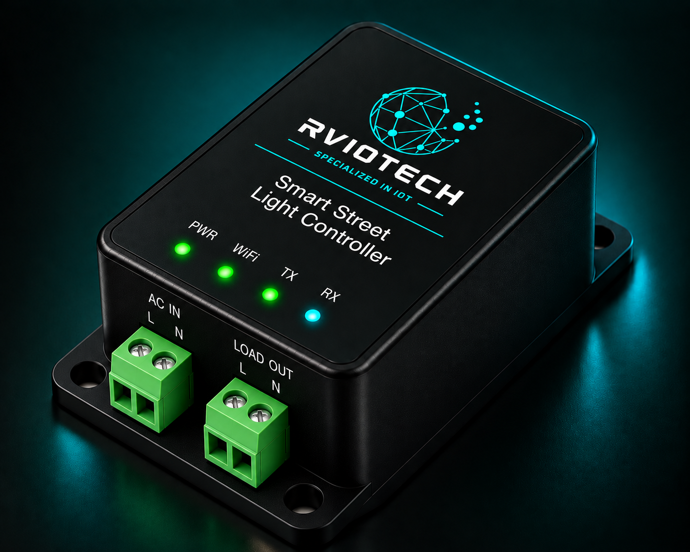

Concept image. Final product design may vary.
Smart Street Light
Controller
A flexible street lighting control solution available in monitoring, automatic light-sensor and remote control configurations for connected lighting applications.
ENQUIRE ABOUT THIS PRODUCT →Choose the Level of Control You Need
The Smart Street Light Controller can be configured according to the application — from simple ON/OFF monitoring to automatic light-based operation or complete remote control.
Monitor whether a street light is ON or OFF and provide its status to the monitoring system.
Automatically switch the street light ON or OFF based on ambient light conditions.
Remotely control street lights using GSM or Wi-Fi connectivity from a connected platform.
From Street Light to Monitoring and Control
The controller connects with the street lighting circuit and can monitor, automatically control or remotely operate the light depending on the selected configuration.
Make Street Lighting More Connected
Conventional street lighting systems may provide limited visibility and control. A connected controller can provide light status monitoring, automatic operation or remote control depending on the required application.
- Street light ON / OFF monitoring
- Ambient light based automatic control
- Remote ON / OFF control
- GSM connectivity option
- Wi-Fi connectivity option
- Configurable operation
- Centralized monitoring integration
- Suitable for individual or multiple lights
Where It Can Be Used
Flexible Lighting Control
- 01 Simple ON / OFF status monitoring
- 02 Automatic light-based operation
- 03 Remote control using GSM or Wi-Fi
- 04 Reduced manual intervention
- 05 Centralized monitoring capability
- 06 Configurable for different lighting applications
Connect Your Street Lighting
From simple monitoring to automatic and remote control, configure the solution according to your lighting requirements.